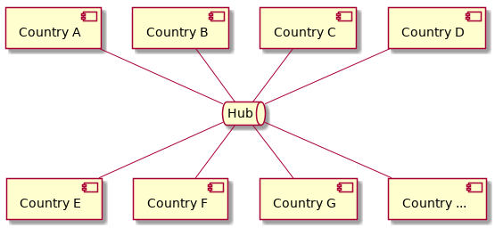

Multi-Channel Architecture¶
This page explains the advantages of a multi-channel architecture facilitating cross-border trade by enabling Government to Government (G2G) document exchange.
Hubs models are obvious, but possibly wrong¶
First, let’s start by considering the alternative to multi-channel architecture; a single channel (or “Hub”) model.

In this model, there is a single logical Hub that all messages pass through. This logical Hub could be a distributed ledger, traditional database, paper clearinghouse, so some other technology. The basic idea is that countries send their messages to this hub and receive their messages from it too.
Hub models require participants to adopt a common technology platform. This platform must meet the needs of all participatnts both in the moment and in the future.
Hub architectures have been built many times before. Some people find this sort of design intuitively appealing, perhaps because the idea of standardising on a single solution seems like it should minimise interoperability challenges.
But standardising on a single implementation solves interoperability the wrong way. Interoperability comes from standard interfaces, not from common implementation. If two systems have an effective way to interoperate, then there is no reason for them to have the same implementation. Individual participants should be free to implement their parts of the system in the way that makes the most sense to them.
What is a multi-channel architecture?¶
As an alternative to the Hub model, consider the following:
![@startuml
component ca [
Country A
]
component cb [
Country B
]
component cc [
Country C
]
component cd [
Country D
]
component ce [
Country E
]
component cf [
Country F
]
component cg [
Country G
]
component ch [
Country ...
]
queue ch1 [
bilateral
general purpose
]
queue ch2 [
multilateral
topic-specific
]
queue ch3 [
bilateral
topic specific
]
queue ch4 [
multilateral
general purpose
]
queue ch5 [
multilateral
general purpose
]
cb -- ch5
cc -- ch5
cd -- ch5
ch5 -- cf
ch5 -- cg
ch5 -- ch
ca -- ch1
ca -- ch2
cb -- ch2
cb -- ch4
cc -- ch2
cd -- ch3
ch1 -- ce
ch4 -- ce
ch2 -- cf
ch4 -- cf
ch2 -- cg
ch3 -- ch
@enduml](_images/plantuml-24a2659e5d221d84d8a2783b86c21397012c90db.png)
The above illustration shows a multi-channel scenaro where:
Country A and Country E have a bilateral arangement for exchanging messages on any topic
There is a multilateral arangement between Countries B, E and F that supports messages on any topic
There is a multilateral arangement between Countries A, B, C, F and G that supports messages on a specific topic
There is a multilateral arangement between Countries B, C, D, F, G and others (…) that supports messages on any topic
There is an arangement between Country D and others supporting messages on some specific topic.
On first impression, the above scenario might seem overcomplicated. However, the reality of international trade is vastly more complex than this diagram!
There three distinct reasons why a multi-channel architecture is necessary.
Support for Variable Topology¶
Agreements between Countries are inherently bespoke. Some are bilateral (links), others are multilateral (networks). The scope and details are customised and optimised through a process of negotiation. They changes over time, as existing arangements are refined or adjusted and new arangements are made.
Even if a hub model is theoretically better (no such theory is offerd here), the idea of asking almost 200 countries to agree on a precice scope and details for sharing cross-border trade documents seems like it would be slow, difficult and unlikely to succeed.
There are examples of universal hubs, but they have narrow scope (for example, ePhyto Certification).
It seems more pragmatic to assume that cooperative sharing arangements involving cross-border trade documentation will involve a similar process of negotiation to other international agreements.
While technical standardisation may reduce waste, free countries will always ultimately determine who they share what with, when and how; and those arangements will change over time with policy and circumstance.
Any design that does not support variable topologies seems likly to result in a sub-optimal compromise.
Support for Variable Technology¶
Technical solutions for cross-border document exchange have existed for many centuries. Emerging technologies (such as distributed ledgers) have different characteristics which may confer some advantages, make new things possible or make previously difficult things more easy. No doubt technology will continue to evolve and as-yet unimagined solutions will emerge with even more favourable characteristics.
Sometimes, the best tehcnology choice in a given situation would not be the best choice in a different situation. The asset lifecycle of existing systems, infrastructure, organisational capacities and technology strategies of different groups can create a prediliction (or an aversion) for specific technologies.
Even if it were possible to determine a universal “best technology” to implement cross-border trade document sharing, that would be a fleeting anomoly.
Any design that does not allow countries to negotiate technology choices (and mutually agree to update or upgrade technology) seems incongruent with the other negotiated details of international arangements. An attempt to unilaterally impose a single, unchanging technology choice would not only require impractically challenging negotiation, it would also pit the fate of the system against the march of technological progress.
Support for Variable Protocols¶
The current proof of concept supports a wire protocol that we called “Discrete Generic Message” (DGM). Each communication packet between countries contains a single (“discrete”) message, and there is no limit to the taxonomy of message types that could be sent (generic).
This protocol was adequate and sufficient for the first stage of our Proof Of Concept. It may yet prove to be a useful protocol in a wide range of situations. However, there are also situations where a different protocol design may be more appropriate.
If there are very high message volumes, or a technology is used with a low bandwith (or high cost per transmission), then a batched protocol design may be more appropriate. Rather than sending “discrete” messages (one at a time) a batch protocol could send a compressed collection of messages in in each packet. This would involve trade-offs, especially with all-or-nothing validation semantics (such as blockchain consensus), but there may be situations where a batch protocol is the most practical choice.
Some distributed ledger technologies support a feature called “Smart Contracts”. These are sometimes known by other names, such as “Transaction Families” or “Chain Code”, but what they all have in common is that they allow the channel to enforce mutually agreed policies in a trustworthy way. Smart contracts allow distributed ledger to operate like an “independant umpire”, which is potentially useful in a wide variety situations that require adversarial trust. However, this has the downside of tightly coupling policies to the message transport mechanism. This means the channel can only be used for the purposes that correspond exactly to the policies implemented in the smart contract.
Given the bespoke nature of international trade agreements, developing a channel that fits them all well could be very difficult or perhaps impossible. The strategy of allowing multiple channels might make the soluton seem more complicated from some perspectives, but if countries can route messages over multiple channels then it should be possible for a country to maintain integration with the collection of channels that best fit their needs.
Interoperability requires standard interfaces¶
The multi-channel architecture theory needs to be tested.
This Proof of Concept software includes a “channel router” component, with a mechanism for deciding which channel should be used for each message (i.e. an “outbound message routing” mechanism). It also includes a “channel observer” component, which is a mechanism for accepting messages from different messages and funneling them all into the same process regardless of how they are transmitted.
The code is designed in a way that assumes that a standardised “Channel API” exists, however an actual Channel API has not been developed yet.
This requires active research, which would benefit greatly from integrating one (or preferably more) existing G2G message channels.
If a standard Channel API is developed that can successfully be applied to existing G2G message channels, then it should be possible to provide an abstraction over the existing channels such that:
Business to Government (B2G) transactions operate against standard APIs, which hide the details of which actual channel is used.
Governments should be able to modify their channel implementations in way that insultates their regulated community from the change. In other words, without impacting their users.
Makes it possible to integrate additional, new channels without modifying the standard Channel API design.